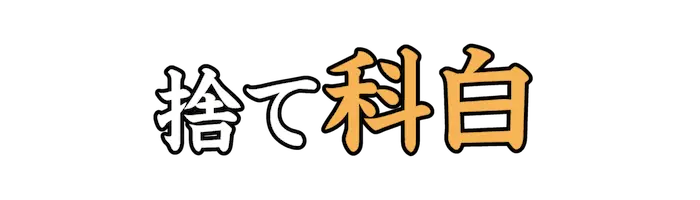
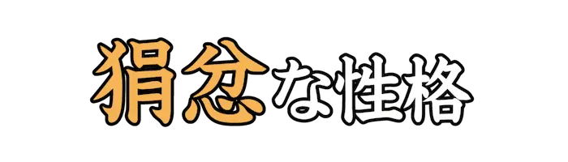
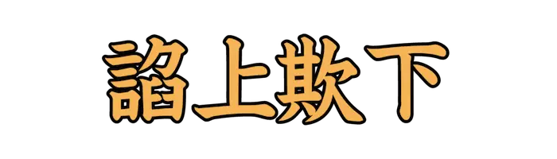
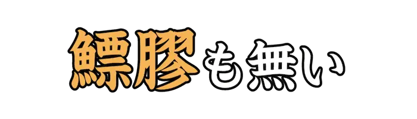
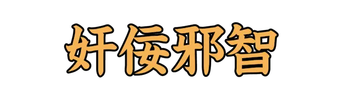
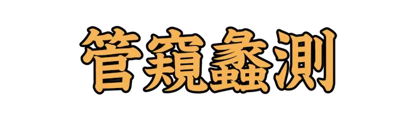
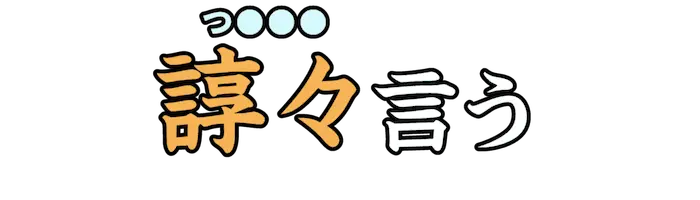

| ID | 問題 | 答え | 解説 |
|---|---|---|---|
| Lv05_Ca013_0001 | げじげじ | 意地が悪い嫌われ者の性格のたとえ。 | |
| Lv05_Ca013_0002 | けち | 金銭や品物を惜しんで出さないような人。 | |
| Lv05_Ca013_0003 | ごろつき | 素行が悪く、悪事をはたらく者。ならず者。 | |
| Lv05_Ca013_0004 | しわんぼう | けちな人を<軽蔑|けいべつ>して言う語。 | |
| Lv05_Ca013_0005 |  |
ぜりふ | 立ち去る際に、相手の返事をきかずに一方的に言い放つ言葉。 |
| Lv05_Ca013_0006 | ずる | 人を出し抜くような行為や、不正。 | |
| Lv05_Ca013_0007 | そうすかん | 全員から嫌われたり、反発されること。 | |
| Lv05_Ca013_0008 |  |
けんぷん | 心が狭く、怒りっぽい性格。 |
| Lv05_Ca013_0009 | でっ | 存在しないことを、まるであるかのように創りあげること。<捏造|ねつぞう>。 | |
| Lv05_Ca013_0010 | ろうれつ | 軽蔑されるほど、卑劣でいやしいこと。 | |
| Lv05_Ca013_0011 | のぶと | 非常に横着で、ずうずうしい。図太い。 | |
| Lv05_Ca013_0012 | あげつら | 細かい点にまで言及し、是非や良し悪しをあれこれと論じる。 | |
| Lv05_Ca013_0013 | ひれつ | 品性や行動が下劣で、汚らしいこと。 | |
| Lv05_Ca013_0014 | へんてこらい | 奇妙で奇天烈なことや、ばかげていること。 | |
| Lv05_Ca013_0015 | みくび | 相手を大したことがないとして、あなどる。軽んじる。 | |
| Lv05_Ca013_0016 | むしけら | 小さな虫類にたとえて、取るに足らない人をいやしめて言う語。 | |
| Lv05_Ca013_0017 | もどか | 気に食わない。非難されるべきである。また、じれったい。 | |
| Lv05_Ca013_0018 |  |
てんじょうぎか | 自分よりも権威のある者には<媚|こ>びへつらい、下の者には馬鹿にした態度をとること。 |
| Lv05_Ca013_0019 | うるさがた | 何にでも文句を付けないと気が済まない人。 | |
| Lv05_Ca013_0020 | おためごか | 表面上は相手のためを思うようであるが、本当は自分の利益をはかること。 | |
| Lv05_Ca013_0021 | そし | 相手を非難したり、なじる。 | |
| Lv05_Ca013_0022 |  |
にべ | 愛想がなかったり、そっけない。 |
| Lv05_Ca013_0023 | わわく | 道義に反することをして、人を惑わすこと。また、無理を言ったりすること。 | |
| Lv05_Ca013_0024 |  |
かんねいじゃち | 心がねじけていて、悪知恵がはたらくこと。 |
| Lv05_Ca013_0025 | うら | 怒りを感じたり、不平不満に思う。 | |
| Lv05_Ca013_0026 | いか | いきどおったり、かんしゃくを起こす。 | |
| Lv05_Ca013_0027 |  |
かんきれいそく | とても狭い見識だけで、物事の全体を判断するたとえ。 |
| Lv05_Ca013_0028 | ぞんざい | お増は<粗雑|ぞんざい>な障子の張り方をしながら、自分のことばかり語った。[足迹／<徳田秋声|とくましゅうせい>著] | |
| Lv05_Ca013_0029 |  |
つべこべ | 私は<這麽|こんな><性質|たち>ですから<諄々|つべこべ>言つて見ることも御座いますが…[鳥影／<石川啄木|いしかわたくぼく>著] |
| Lv05_Ca013_0030 | どじ | 「<駑癡|どじ>だなあ。そんなに締める奴があるかい。…[坑夫／<夏目漱石|なつめそうせき>著] |